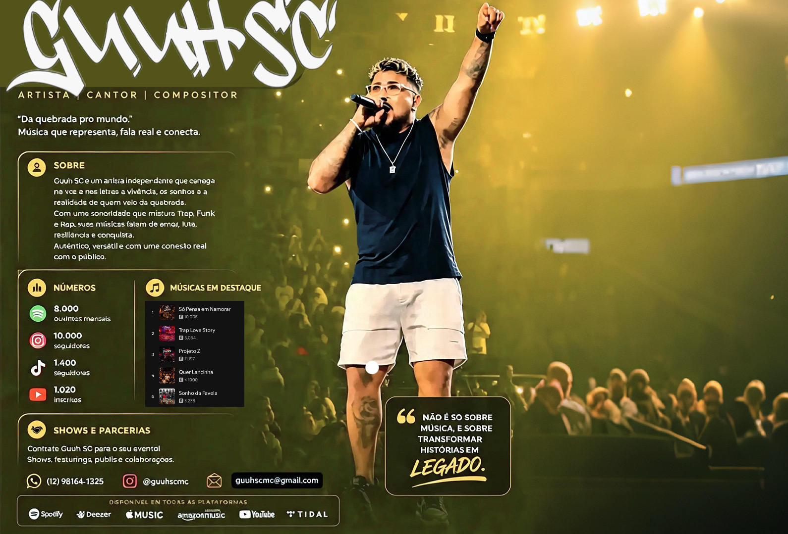
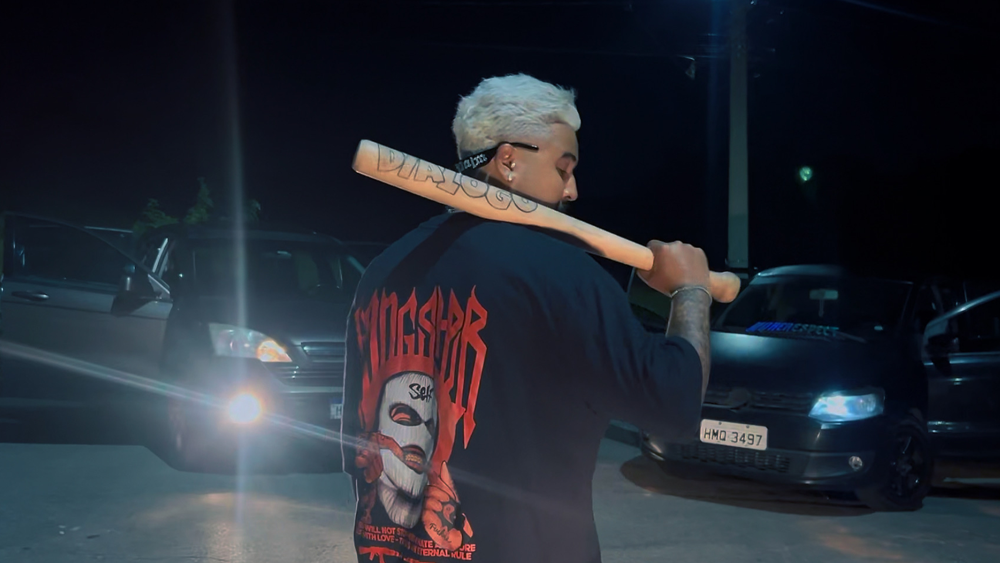
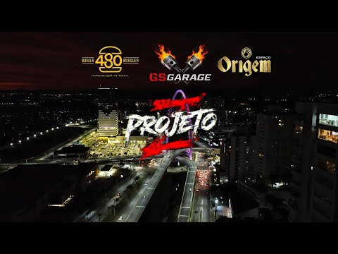
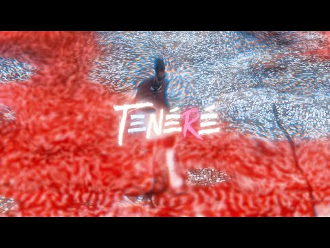
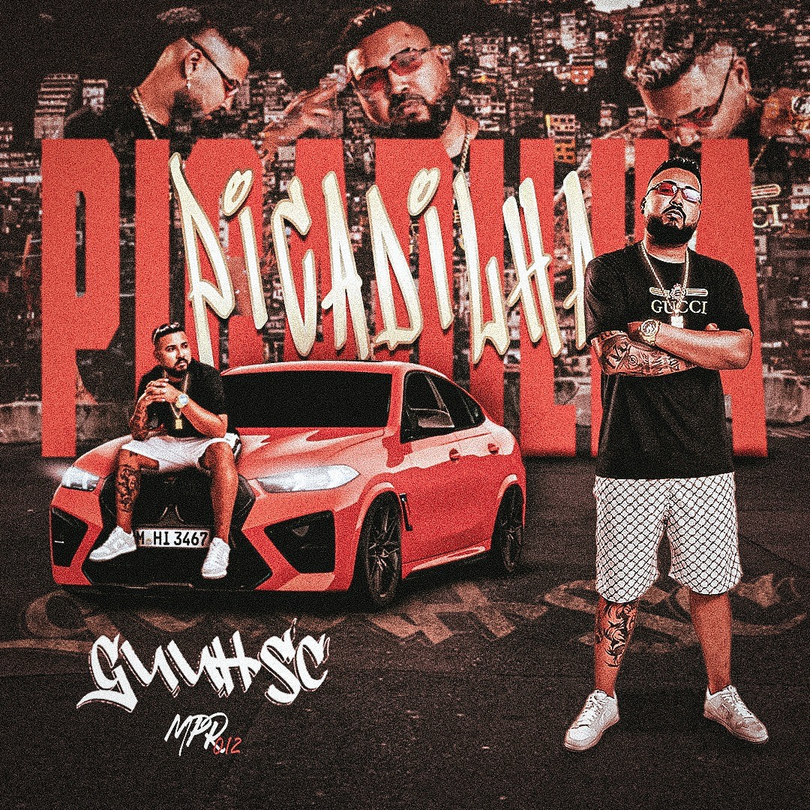
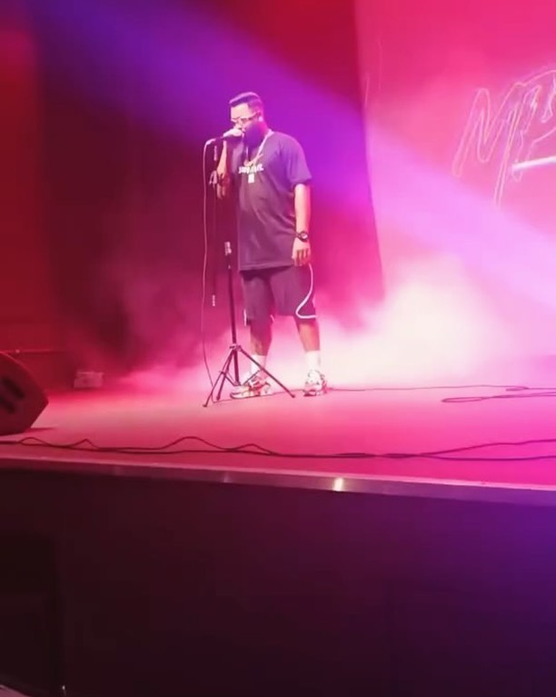

GUUH SC
A CARTA
Plataforma Digital e Identidade Visual — GUUH SC ("Voz da Quebrada")
Ecossistema web oficial, estratégia de conversão B2B/B2C e campanha visual do álbum "A Carta".
Atribuições
UX/UI Design & Dev Web
Identidade Visual Social Media
Direção Criativa
Campanha "A Carta"
Ecossistema One-Page Oficial

// RESULTADOS & MÉTRICAS — IMPACTO E VALIDAÇÃO ESTRATÉGICA
100%
Ecossistema Digital Unificado
Centralização de todos os lançamentos do álbum "A Carta", clipes e redes em uma experiência única.
3.4x
Agilidade no Fechamento de Shows
Canal comercial direto que permitiu aos contratantes consultar datas abertas e rider técnico em menos de 2 minutos.
Consolidação
Identidade Visual Omnichannel
Alinhamento visual rigoroso entre palcos, capas de streaming, Instagram e a plataforma web.
// 01 — VISÃO GERAL E CONTEXTO
O Desafio do Artista Independente
Presença Fragmentada e Ruído de Comunicação
A necessidade de centralizar a presença digital do artista independente GUUH SC em um único hub oficial, conectando lançamentos musicais, presença nas redes sociais e contato comercial sem dispersão de audiência.
Hub de Conversão B2B e Retenção B2C
Criar uma plataforma otimizada não apenas para engajar fãs (com clipes e streaming), mas que funcionasse como uma ferramenta de vendas e autoridade para contratantes de shows para a temporada 2026/2027, alinhada à estética do projeto "A Carta".
Mapeamento de Públicos-Alvo
Fãs e Ouvintes
Consumo rápido de músicas, clipes em alta definição e acompanhamento em tempo real da agenda de shows.

Contratantes & Produtores
Verificação instantânea de autoridade (histórico de palco, métricas de público) e facilidade de contato direto para orçamentos.
// 02 — IDENTIDADE VISUAL & UI DESIGN
Look & Feel Urbano de Alto Contraste
Uma abordagem urbana, noturna e de alto contraste, refletindo a energia e a atitude da cena musical ("Voz da Quebrada"), combinando texturas de arte de rua com refinamento editorial.
Paleta de Cores e Tokens UI
Roxo Profundo
Background principal que valoriza mídias e conteúdos audiovisuais.
Neon Rosa Choque
Cor de destaque principal para CTAs críticos (Ouvir no Spotify, Contato).
Ciano / Verde Neon
Contraste secundário para tags de status de agenda, badges e ênfase visual.
Branco Puro
Títulos display e tipografia de alto impacto.
Cinza Metálico
Textos de apoio, legendas e divisores sutis.
Bebas Neue / Impact Display
A CARTA • GUUH SC • VOZ DA QUEBRADA
Títulos de impacto visual pesado, nomes de faixas e chamadas de ação.
Montserrat / Inter Clean Sans
Plataforma oficial construída com foco em engajamento e conversão de contratantes.
Textos corridos, dados técnicos de shows e navegação acessível.

// 03 — ARQUITETURA DA INFORMAÇÃO & UX STRATEGY
Jornada de Navegação One-Page
Estrutura One-Page contínua: do engajamento emocional à conversão comercial.
Hero Section
Apresentação imediata da marca (Logo GUUH SC) com botões rápidos de ação para reprodução e contato.
Storytelling (Quem é GUUH SC)
Humanização do artista com foto de bastidor autêntica e biografia concisa da trajetória da quebrada aos palcos.
Hub Audiovisual (Vídeos & Lançamentos)
Organização em formato de grid dos clipes oficiais do YouTube (incluindo Músicas e Making Of), imergindo o usuário.
Retenção e Streaming (Spotify Oficial)
Integração de streaming para que os ouvintes escutem a discografia completa sem sair do ecossistema do site.
Social Proof (Últimas do Instagram)
Feed dinâmico que demonstra relevância em tempo real, engajamento comunitário e presença digital ativa.
Seção de Autoridade (Agenda Temporada 2026/2027)
Listagem do histórico de palcos e próximos shows com tags visuais de status para gerar urgência.
Conversão (Contato para Shows)
Formulário direto e canais de WhatsApp comercial posicionados estrategicamente no final da jornada do usuário.




// 04 — SOLUÇÕES DE DESIGN APLICADAS
Interface & Protótipo do Ecossistema
Uso de Cards e Containers Encapsulados
O layout utiliza seções encapsuladas com bordas suaves para separar visualmente álbuns, clipes e datas de shows, evitando poluição visual no fundo escuro.
Hierarquia Visual com Acentos Neon
O botão rosa vibrante ("Ouvir no Spotify", "Inscrever-se", "Enviar uma Mensagem") é o elemento de maior peso visual na tela, guiando o olhar com clareza.
Responsividade Total (Mobile First)
Arquitetura pensada primordialmente para telas de smartphones, onde mais de 88% do público do artista e produtores consome conteúdo musical.
A CARTA
GUUH SC
Da vivência periférica à expressão sonora visceral. Ouça o projeto completo nas principais plataformas digitais.
A CARTA — GUUH SC
TRACK 01 - INTRO · 03:42Agenda de Shows & Festivais
// 05 — CONCLUSÃO E RESULTADOS
Impacto e Validação Estratégica
Ecossistema Digital Unificado
Centralização de todos os lançamentos do álbum "A Carta", clipes e redes em uma experiência única.
Agilidade no Fechamento de Shows
Canal comercial direto que permitiu aos contratantes consultar datas abertas e rider técnico em menos de 2 minutos.
Identidade Visual Omnichannel
Alinhamento visual rigoroso entre palcos, capas de streaming, Instagram e a plataforma web.
"A sinergia entre design editorial, branding urbano e arquitetura one-page transformou a autoridade do artista no mercado de shows."